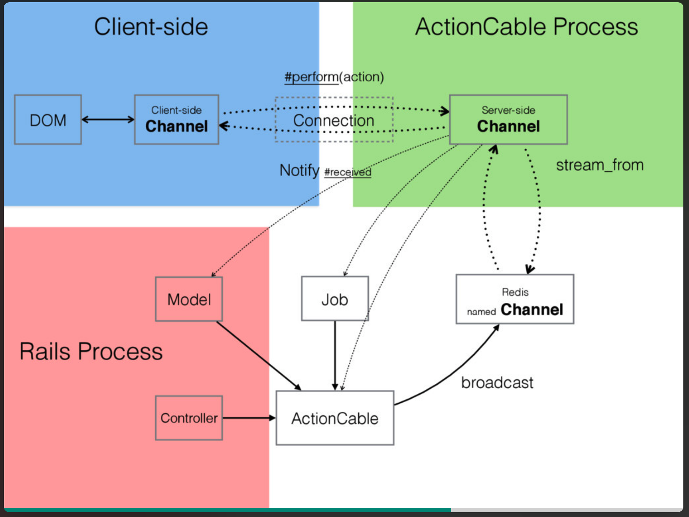

Action Cable的使用分析
文章目录
Action Cable是Rails5中为了类似聊天、通知之类的实时通讯而引入的新功能，是这个版本的一个重大特性吧，也可以说是基于websocket进行的一个服务。下面通过ruby china中对Action Cable的使用进行一定的解释。
背景
- 轮询：客户端采用AJAX向服务器发送请求，服务器接收到请求后立即返回响应信息并关闭连接。
- 长轮询：客户端采用AJAX向服务器发送请求，服务器保持连接，等到有新消息时返回响应信息并关闭连接，客户端处理完响应信息后发送新的请求。
- 长连接：客户端向服务器发送请求，建立一条持久化TCP连接，服务器写入数据后并不会关闭连接，之后的数据返回仍旧使用这条连接，客户端发起新请求时也是使用这条连接。但其中使用的是http请求，头部带有较多信息，相对来说，会有部分浪费。值得一说的是，由于HTTP协议特性，它是被动的，一个request只能有一个response，而response是被动的，不能够主动发起
- websocket：一种基于TCP的协议，可以进行双向通信。在握手阶段，使用http协议发送一个请求，头部带有下列类似信息
|
|
这样子的信息，告诉服务器端我要使用websocket协议，如果服务器支持websocket协议，会返回一个确认信息，表示已经使用websocket协议通信，如下显示
|
|
在这里之后就与http协议没有关系了，而这个连接的状态码应该是101，这也是一个协议转换的表现。
使用
Action Cable就是基于websocket开发的一个实时通讯的全栈解决方案，下面使用Ruby China的源码进行分析，对Action Cable的使用进行一定的说明，这个分析的话是从客户端请求开始解释，可能与实际开发过程不太一致。
客户端
Action Cable默认提供了一个文件app/assets/javascripts/cable.js可以用来开启websocket服务，而Ruby China中对代码进行了整合，放在了app/assets/javascripts/app.coffee这个文件中
|
|
这里的话调用后客户端就会新建一个websocket连接，其中在layout/application.html.erb文件中头部添加了 <%= action_cable_meta_tag %> 的标签，函数源码如下
|
|
这个会生成一个html标签，包含了ActionCable.server的url地址，被createConsumer函数利用。
这里使用Ruby China中新回复提醒的功能进行解释，在app/assets/javascripts/topics.coffee中定义了下列函数
|
|
App.cable.subscriptions.create这个操作会向RepliesChannel这个频道产生一个新的订阅，connected定义了连接时进行的操作，先执行followCurrentTopic这个函数，而根据这个函数的定义是去调用RepliesChannel#follow，这个类似于远程调用，调用的是服务端的函数，（服务端会主动暴露这些公开的方法，因此可以通过perform方法去调用），其中follow函数的定义如下
|
|
stream_from 函数查代码显示
logger.info "#{self.class.name} is streaming from #{broadcasting}"，
ActionCable 收发信息的最小单位是 stream ，这个函数主要是对连接下的stream进行标记。
上述是客户端对服务器端进行了频道的订阅，当然订阅后也可以通过这样调用
window.repliesChannel.send({ sent_by: "test", body: "This is a test." })向服务器端发送消息，服务器端需要设定received函数进行接收，Ruby China没有用到这个功能，所以没有定义。
服务器端
首先在app/channels/application_cable/connection.rb这个文件中对客户端的连接进行认证
|
|
当用户没有登录时可以选择拒绝连接reject_unauthorized_connection，这里没有这么做。
然后呢在app/channels/application_cable/channel.rb中定义ApplicationCable::Channel类，在这个里面可以写一些多个channel共用的代码。剩下的就是定义自己需要使用的channel，Ruby China中定义了notifications_channel和replies_channel。
然后呢，当用户对一个topic进行回复之后，在数据成功创建后，app/models/reply.rbmodel中定义的
|
|
这里使用了activejob进行处理，perform_later会调用perform函数，查看app/jobs/notify_reply_job.rb的代码可以发现
NotifyReplyJob#perform又调用了一个类方法
|
|
而其中notify_reply_created函数定义如下，部分省略
|
|
通过方法调用可以发现，最后使用ActionCable.server.broadcast进行消息的广播，向客户端传播消息。
回到客户端
再回到客户端，前面的coffee代码中定义了接收操作
|
|
对传输数据进行一些验证，然后将class="notify-updated"的div模块显示，而模块代码如下
|
|
最终就得到了下图的效果，当有新回复时，处于当前页面的用户会收到提醒。
最后附上一张曹力在RubyConf China 2016上关于 ActionCable 与实时交互 中的PPT的一张截图，全面的解析了整体过程